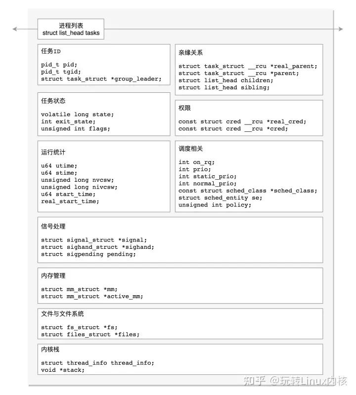
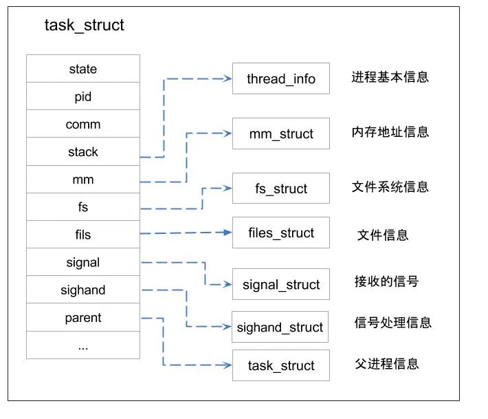

概述
- 本篇再次总结
task_struct结构体
在 Linux 里面，无论是进程，还是线程，到了内核里面，我们统一都叫任务（Task），由一个统一的结构 task_struct 进行管理。
这个结构非常复杂，本文将细细分析 task_struct 结构。主要分析顺序会按照该架构体中的成员变量和函数的作用进行分类，主要包括：
-
任务 ID
-
亲缘关系
-
任务状态
-
任务权限
-
运行统计
-
进程调度
-
信号处理
-
内存管理
-
文件与文件系统
-
内核栈


亲属关系
-
task_struct 结构体的 struct task_struct real_parent 和 struct task_struct parent 成员用于表示进程的亲属关系。
-
- real_parent: 表示实际父进程（真正的父进程），即创建当前进程的直接父进程。
-
- parent: 表示当前进程的普通父进程，即调用 fork()或 clone()函数创建当前进程的父进程。
-
- 这两个成员都是指向 task_struct 结构体的指针，通过它们可以遍历整个进程树来查找和处理与亲属关系相关的操作。通过访问这些成员，可以确定一个进程的直接父子关系，并进行相应的处理。
-
在 Linux 系统中，所有进程之间都有着直接或间接地联系，每个进程都有其父进程，也可能有零个或多个子进程。拥有同一父进程的所有进程具有兄弟关系。
| 字段 | 描述 |
|---|---|
| real_parent | 指向其父进程，如果创建它的父进程不再存在，则指向 PID 为 1 的 init 进程 |
| parent | 指向其父进程，当它终止时，必须向它的父进程发送信号。它的值通常与 real_parent 相同 |
| children | 表示链表的头部，链表中的所有元素都是它的子进程 |
| sibling | 用于把当前进程插入到兄弟链表中 |
| group_leader | 指向其所在进程组的领头进程 |
进程内核栈
-
void *stack; -
在 Linux 内核中，每个进程都有一个专用的内核栈，用于保存进程在内核态执行时的临时数据和上下文信息。这个内核栈是在进程创建过程中被分配的。 进程的内核栈通常是通过结构体 task_struct 的成员变量 stack 来表示。stack 是一个指向 void 类型的指针，在运行时会指向实际分配给该进程的内存区域。
-
具体来说，当创建新进程时，Linux 内核会为其分配一个合适大小的内核栈空间，并将其地址赋给 task_struct 中的 stack 成员。这个内存区域位于线性地址空间最高端（向低地址扩展）或者是特定的固定位置（如 x86 架构中使用了固定位置）。然后，在进入内核态执行时，当前正在运行的任务将切换到自己的内核栈上进行操作。
进程标记
unsigned int flags; /* per process flags, defined below */
-
unsigned int flags 是 task_struct 结构体的一个字段，用于记录进程的标记或状态信息。这个字段是一个无符号整数类型，通常使用位掩码来表示不同的标记。这个字段可以根据不同的需求和内核版本定义各种标记，以便对进程进行标识和管理。一些常见的标记可能包括：
-
- 任务状态：例如是否正在运行、停止、僵尸等。
-
- 调度器相关：例如调度策略、优先级等。
-
- 信号处理：例如挂起信号集、未决信号集等。
-
- 进程特性：例如是否为守护进程、是否允许被追踪等。
反应进程状态的信息，但不是运行状态，用于内核识别进程当前的状态，以备下一步操作
flags 成员的可能取值如下，这些宏以 PF(ProcessFlag)开头
/*
* Per process flags
*/
#define PF_EXITING 0x00000004 /* getting shut down */
#define PF_EXITPIDONE 0x00000008 /* pi exit done on shut down */
#define PF_VCPU 0x00000010 /* I'm a virtual CPU */
#define PF_WQ_WORKER 0x00000020 /* I'm a workqueue worker */
#define PF_FORKNOEXEC 0x00000040 /* forked but didn't exec */
#define PF_MCE_PROCESS 0x00000080 /* process policy on mce errors */
#define PF_SUPERPRIV 0x00000100 /* used super-user privileges */
#define PF_DUMPCORE 0x00000200 /* dumped core */
#define PF_SIGNALED 0x00000400 /* killed by a signal */
#define PF_MEMALLOC 0x00000800 /* Allocating memory */
#define PF_NPROC_EXCEEDED 0x00001000 /* set_user noticed that RLIMIT_NPROC was exceeded */
#define PF_USED_MATH 0x00002000 /* if unset the fpu must be initialized before use */
#define PF_USED_ASYNC 0x00004000 /* used async_schedule*(), used by module init */
#define PF_NOFREEZE 0x00008000 /* this thread should not be frozen */
#define PF_FROZEN 0x00010000 /* frozen for system suspend */
#define PF_FSTRANS 0x00020000 /* inside a filesystem transaction */
#define PF_KSWAPD 0x00040000 /* I am kswapd */
#define PF_MEMALLOC_NOIO 0x00080000 /* Allocating memory without IO involved */
#define PF_LESS_THROTTLE 0x00100000 /* Throttle me less: I clean memory */
#define PF_KTHREAD 0x00200000 /* I am a kernel thread */
#define PF_RANDOMIZE 0x00400000 /* randomize virtual address space */
#define PF_SWAPWRITE 0x00800000 /* Allowed to write to swap */
#define PF_NO_SETAFFINITY 0x04000000 /* Userland is not allowed to meddle with cpus_allowed */
#define PF_MCE_EARLY 0x08000000 /* Early kill for mce process policy */
#define PF_MUTEX_TESTER 0x20000000 /* Thread belongs to the rt mutex tester */
#define PF_FREEZER_SKIP 0x40000000 /* Freezer should not count it as freezable */
#define PF_SUSPEND_TASK 0x80000000 /* this thread called freeze_processes and should not be frozen */